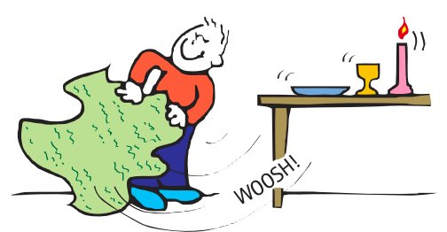
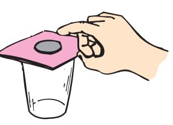
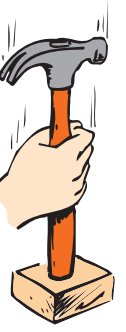

Forces and Newton’s First Law
Mathematical idea: Newton’s First Law is a relationship between motion and net force: unchanged motion corresponds to zero net force.
The inertia images in this section are demonstrations of the same principle in different situations. Use them to separate motion from force and to distinguish “no force” from “no net force.”
Learning Target
Students will explain Newton’s First Law and use the idea of inertia to predict whether an object’s motion will stay the same or change.
I can statements
- I can state Newton’s First Law in everyday language.
- I can explain that inertia is a property of matter, not a force.
- I can distinguish between “no forces acting” and “no net force acting.”
- I can identify support force, weight, and other common forces in simple situations.
Vocabulary
These are words you will see in this section. Do not define them yet.
- force
- inertia
- Newton’s First Law
- net force
- weight
- support force
- tension
- friction
Use the preview activity to decide which words you already know, recognize, or do not know yet. Watch for these words in bold as you read.
Preview: Skim Before You Read
Directions
Before reading closely, skim the vocabulary list and the section. Look at titles, headings, bold words, pictures, captions, diagrams, tables, and formulas. Do not try to understand everything yet. Your job is to notice what already looks familiar and make predictions about what this section may explain.
Step 1 — Sort the vocabulary. Write each vocabulary word in the column that best matches what you know right now. You may move a word later.
| Know for sure | Recognize | Don’t know yet |
|---|---|---|
Step 2 — Skim the section. Record what catches your attention before you read closely.
| What I noticed | |
|---|---|
| What I predict | |
| What I wonder |
Content: Read, Look, Annotate, Apply
Directions
Read in short chunks. Annotate the prose and the figures together: underline evidence, circle or highlight bold vocabulary, label arrows or measured features, connect a sentence to an image, and write short questions or connections in the margins.
Reading 1: Newton’s First Law changes the question we ask about motion
Older explanations of motion often assumed that a steady force was required to keep an object moving. Galileo turned that idea around by emphasizing what happens when interfering forces such as friction become very small. Newton refined the idea into his First Law: every object continues at rest or continues moving at uniform speed in a straight line unless a nonzero net force acts on it.
The word continues is the key. An object does not need a new forward force every moment simply because it is moving. If it is at rest, it tends to remain at rest. If it is already moving, it tends to keep the same speed and direction. A change—speeding up, slowing down, or turning—is what signals that the net force is not zero.
The tablecloth demonstration makes the “rest stays rest” part visible. A quick pull gives the cloth a large change in motion, while the dishes receive only a brief horizontal interaction and remain nearly where they started. The dishes are not being held in place by an inertia force. Instead, inertia is the name for their tendency to resist the sudden change in motion.

Image read: Follow one dish. Mark the object whose motion changes dramatically and the object that remains close to its initial state of rest.
The coin-and-card demonstration shows the same idea with a different arrangement. A quick sideways force changes the card’s motion. The coin tends to remain at rest horizontally, so after the card moves away the coin can fall into the glass under the influence of gravity. The useful question is not “What force keeps the coin still?” but “What interaction gives the coin enough horizontal net force to change its motion?”

Image read: Trace the card’s horizontal motion and the coin’s later vertical motion. Do not draw an “inertia force”; instead label which interaction actually changes each motion.
A hockey puck that eventually stops provides a useful test of the law. Newton’s First Law does not say the puck must move forever on real ice no matter what. It says continued straight-line motion is expected when the net force is zero. Friction supplies a backward force, so the puck’s motion changes. On a lower-friction surface, the same puck would travel farther before stopping.
Stop and Discuss
- Why is the word continues so important in Newton’s First Law?
- Use one of the two images to explain why inertia should not be drawn as an additional force arrow.
Teacher answer / support: Students should say unchanged motion does not require a continuing net force. Inertia is a property/tendency, not an extra interaction arrow. Friction or other interactions explain changes.
Example 1: The tablecloth trick
A tablecloth is pulled quickly from under dishes. Explain why the dishes can remain nearly in their original positions even though the cloth moves. Use Newton’s First Law and do not describe inertia as a force.
Teacher answer / support: The cloth receives a strong horizontal force and accelerates. The dishes tend to remain at rest because of inertia; the cloth exerts only a brief frictional interaction on them, so their horizontal motion changes little.
You Try It 1: Coin and card
A coin rests on a card above a glass. The card is snapped sideways. Predict the coin’s motion and explain what causes the horizontal card motion and why the coin does not immediately follow it.
Teacher answer / support: The card accelerates sideways because of the applied force. The coin tends to remain horizontally at rest; after the support moves away, gravity makes the coin fall into the glass. No “inertia force” should be drawn.
Reading 2: Inertia is a property of matter, not a hidden force
Inertia is the tendency of things to resist changes in motion. It is useful to think of inertia as resistance to change, but that phrase should not be turned into a new force. Forces come from interactions—gravity, contact with a surface, a rope, a hand, and so on. Inertia describes how matter responds when an interaction tries to change its motion.
Objects with more matter have more inertia. In everyday terms, a loaded cart is harder to get moving, stop, or redirect than an empty cart when similar pushes are used. In this unit, the important point is qualitative: more matter means greater resistance to a change in motion. Inertia is not caused by moving fast, and an object does not “use up” inertia as it moves.
The ball-between-strings demonstration makes the difference between gradual and sudden change noticeable. With a slow pull, the forces have time to build through the system. With a sharp pull, the massive ball strongly resists the sudden change in motion, so the pattern of tension in the strings is different. The picture is useful because it reminds us that the same object can respond differently depending on how rapidly the interaction changes.

Image read: Compare a slow change with a sudden change. Annotate which object has the large inertia and where tension forces actually act.
The hammer illustration uses a sudden stop instead of a sudden start. When the handle is moving downward and stops abruptly, the hammerhead tends to continue its previous motion. That continued motion can tighten the head on the handle. Again, inertia is not a downward force acting on the head; it is the tendency of the head to continue its state of motion while an interaction changes the handle’s motion.

Image read: Mark the motion of the handle just before it stops and the motion the hammerhead tends to continue. Separate that tendency from the actual contact forces.
Stop and Discuss
- What is the difference between saying “the ball has inertia” and saying “a force acts on the ball”?
- How do the ball-and-strings and hammer demonstrations both show resistance to a change in motion?
Teacher answer / support: Listen for “inertia describes resistance to change; force describes an interaction.” The demonstrations involve real tension/contact forces, while inertia is the property that makes sudden changes difficult.
Example 2: Loaded cart versus empty cart
Two carts are identical except one carries a large load. Compare their inertia. If you try to start both moving with similar pushes, which cart is harder to change from rest? Explain without calling inertia a force.
Teacher answer / support: The loaded cart has more inertia because it contains more matter/mass. It is harder to change from rest with a comparable push. Inertia is not a separate force arrow.
You Try It 2: Correct the misconception
A student says, “The faster ball has more inertia because inertia is the force of motion.” Correct the statement. Explain what inertia is and what property of the object matters more directly than its speed.
Teacher answer / support: Correct idea: inertia is a property of matter related to mass, not a force and not something that increases simply because an object moves faster.
Reading 3: Forces can be present even when motion does not change
Newton’s First Law refers to net force, not to the absence of every force. A book lying at rest on a table is a simple example. Earth pulls downward on the book with its weight. The table pushes upward on the book with a support force. Because the book’s motion remains unchanged, those vertical forces balance and the net force is zero.
The support-force image compares a tabletop with a compressed spring. A spring clearly pushes back when it is compressed. The table can be understood in a similar way: the book compresses atoms in the table by a tiny amount, and the table pushes upward on the book. The support force is a real contact interaction even though the deformation is too small to see.

Image read: Draw a downward weight arrow on the book and an upward support-force arrow. Connect the spring picture to the idea that a surface can push back when compressed.
A bathroom scale uses this support interaction in a measurable way. When a person stands still, gravity pulls downward while the scale pushes upward. The scale mechanism is compressed and calibrated to show the magnitude of the support force. A large scale reading therefore does not mean there is a large net force; the downward and upward forces can be equally large and still add to zero.

Image read: Label the two main forces on the person. Then write why a nonzero scale reading can occur at the same time as zero net force.
This gives an important language check for the rest of the unit. “No forces act” means there are literally no relevant interactions producing forces on the object. “No net force acts” means forces may be present but their vector sum is zero. Most everyday objects at rest on Earth are examples of the second statement, not the first.
Stop and Discuss
- Why does a book resting on a table provide evidence for “no net force” rather than “no forces”?
- What does a bathroom scale measure in this equilibrium situation, and why is that not the same as net force?
Teacher answer / support: Book: weight down and support/normal force up. Scale: it reads the support force magnitude in this situation, not the net force. Both are examples of forces present with zero net force.
Example 3: Book on a table
A book rests on a level table. Identify the two main vertical forces on the book, state their directions, and explain why the book’s motion does not change.
Teacher answer / support: Weight acts downward; table support force acts upward. Because the book is at rest with no change in motion, the forces balance and the net force is zero.
You Try It 3: Standing on a scale
A person stands still on a bathroom scale. Explain why the scale can show a large force even though the person is not accelerating. Use the phrases support force, weight, and net force.
Teacher answer / support: The scale pushes upward while gravity pulls downward. Standing still means unchanged motion, so the two forces balance. The scale reading corresponds to the support-force magnitude, while net force is zero.
Vocabulary: Define the Terms
You have now seen these words in the reading, images, and practice. Use this table to consolidate the physics meaning of each term.
| Vocabulary term | Definition |
|---|---|
| force | A push or pull caused by an interaction. |
| inertia | The tendency of an object to resist a change in its state of motion. |
| Newton’s First Law | An object continues at rest or at constant speed in a straight line unless a nonzero net force acts on it. |
| net force | The vector sum of all forces acting on one object. |
| weight | The gravitational force acting on an object. |
| support force | A force from a supporting surface that pushes on an object, usually perpendicular to the surface. |
| tension | A pulling force transmitted through a stretched rope, string, cable, or similar connector. |
| friction | A contact force that opposes relative motion or the tendency for surfaces to slide past one another. |
Summary
- Newton’s First Law says an object continues at rest or at constant speed in a straight line unless a nonzero net force acts on it.
- Inertia is a property of matter that describes resistance to a change in motion; inertia is not a force.
- A change in speed or direction requires a nonzero net force, but continued motion does not require a continuing forward net force.
- Weight is a downward gravitational force near Earth, while a supporting surface can exert an upward support or normal force.
- “No forces acting” and “no net force acting” are different: balanced forces can be present while the net force is zero.
Teaching note: Listen especially for students separating inertia from force and separating individual forces from net force. Those two distinctions drive the rest of Unit 1.
Common Mistakes
| Mistake | Why it is tempting | Check instead |
|---|---|---|
| Drawing an “inertia force” | Inertia sounds like something that actively keeps an object moving. | Only draw forces that come from identifiable interactions. Describe inertia as a property of matter. |
| Saying a moving object needs a forward net force | Everyday motion usually involves friction, so we often keep pushing. | Ask whether the motion is changing. Constant straight-line motion can occur with zero net force. |
| Equating “at rest” with “no forces” | Nothing appears to be happening. | Look for gravity and contact/support forces that may cancel. |
| Treating a scale reading as net force | The scale displays a force value. | Identify the support force and weight separately, then combine them to find net force. |
| Saying faster objects automatically have more inertia | Speed and difficulty stopping feel connected in everyday experience. | In this unit, connect inertia to the amount of matter/mass, not to speed alone. |
A cart moves in a straight line at constant speed. Which phrase best describes the required net force: zero net force or a forward net force? State the phrase and name the law that supports your choice.
A backpack rests on the floor. Describe the two main vertical forces acting on it and explain why this situation is an example of “no net force” rather than “no forces.”
What is one thing you learned in this section? Explain it in at least one complete sentence.
What is one thing from this section you still need to understand or practice more? Be specific.